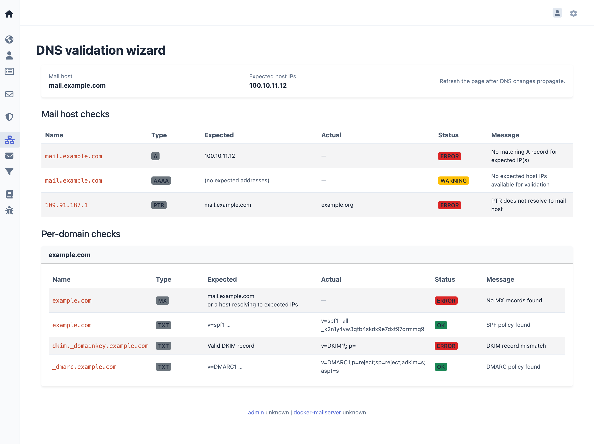

DNS Validation Wizard
The DNS Validation Wizard verifies DNS configuration for domains. It checks DNS records required for mailserver operation, including MX, SPF, DKIM, and DMARC records.

The wizard queries DNS records and displays the validation status for each record type. It shows which records are correctly configured and which require attention.
DNS Propagation
DNS changes may take time to propagate across DNS servers. Typical propagation times range from a few minutes to 48 hours, depending on TTL values and DNS provider. If the wizard shows validation failures immediately after adding or modifying DNS records, wait for propagation to complete before re-checking.
For detailed information about required DNS records and their configuration, see DNS Configuration.